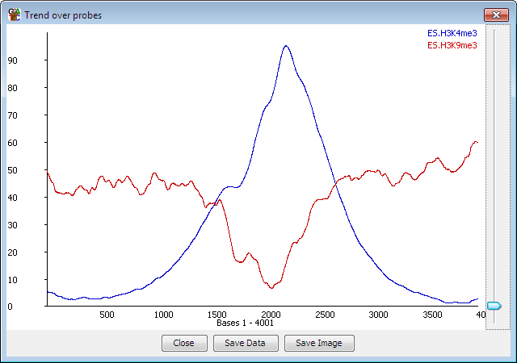
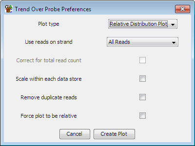

The probe trend plot allows you to look at differences in read density over an "average" probe. It takes all the probes in a probe list and works out how many reads overlap with each position in each probe and then plots this out as an average over all of the probes.

For example, if you designed your probes over all the genes in your genome* then you could see if there was a general trend to having more reads nearer the 5' or 3' end overall.
The trend plot will plot values for probes with forward or unknown strand from left to right, and reverse probes from right to left so you can, for example, create probes over every promoter and get a sensible plot since the promoters from genes on the reverse strand will be adjusted to lie over the counts from those on the forward strand.
If your probes are all the same length (eg coming from a windowed probe generator or some feature generators) then the plot will be performed at 1bp resolution. If your probes are different lengths (eg from a contig generator) then each probe will be divided into 100 bins and reads will be mapped in that way.
A plot is drawn for every visible data store when you launch the probe trend plot.

Once you have your plot you can choose to export either a view of the plot itself, or alternatively you can export the underlying data as a tab delimited text file.